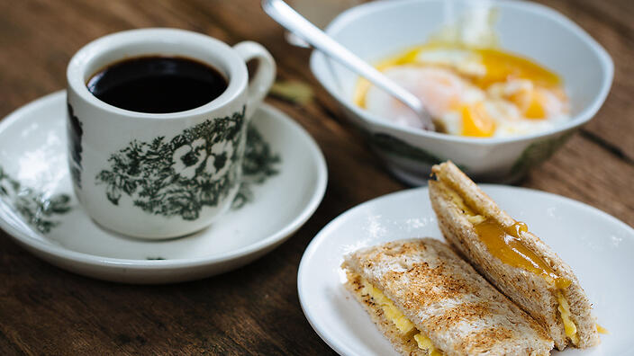

Kaya Toast with half-cooked eggs

Description
Kaya is a very sweet coconut jam, considered a staple throughout Singapore and parts of Malaysia. It is best served on unseeded whole
meal toast with a soft boiled egg, and washed down with strong black coffee. (Adam Liaw)
Ingredients
Kaya
- 10 eggs
- 1kg caster sugar, plus 50g extra
- 5 fresh pandan leaves, tied in a knot
- 550ml coconut cream
- 20g unsalted butter
Half-cooked eggs
- 4 free-range eggs (at room temperature)
- dash of soy sauce
- pinch of ground white pepper
Toast
- 4 slices whole meal bread
- 4 unsalted butter (thick slices)
- pinch of sea salt
Steps
- To make the kaya, combine the eggs and 1 kg sugar in a tall, slender saucepan and whisk in one direction until smooth and runny.
- To make the half-cooked eggs, bring a small saucepan of water to the boil and remove from the heat. Add 125 ml (½ cup) of cold
water to the pan, then add the eggs. Cover the pan and allow to stand for 6 minutes. Crack the eggs into two bowls and add a dash
of soy sauce and white pepper to each.
- To make the toast, grill the bread until well-toasted. Cut off the crusts and cover with slices of butter. Spread generously with 1-2
tablespoons kaya, then cut in half.
Note
- Fresh pandan leaves give the jam a slightly toasted, nutty flavour. Fresh leaves are readily available from Asian greengrocers.
- This recipe makes about 1 litre of kaya which will keep refrigerated in sterilized jars for 1-2 weeks.